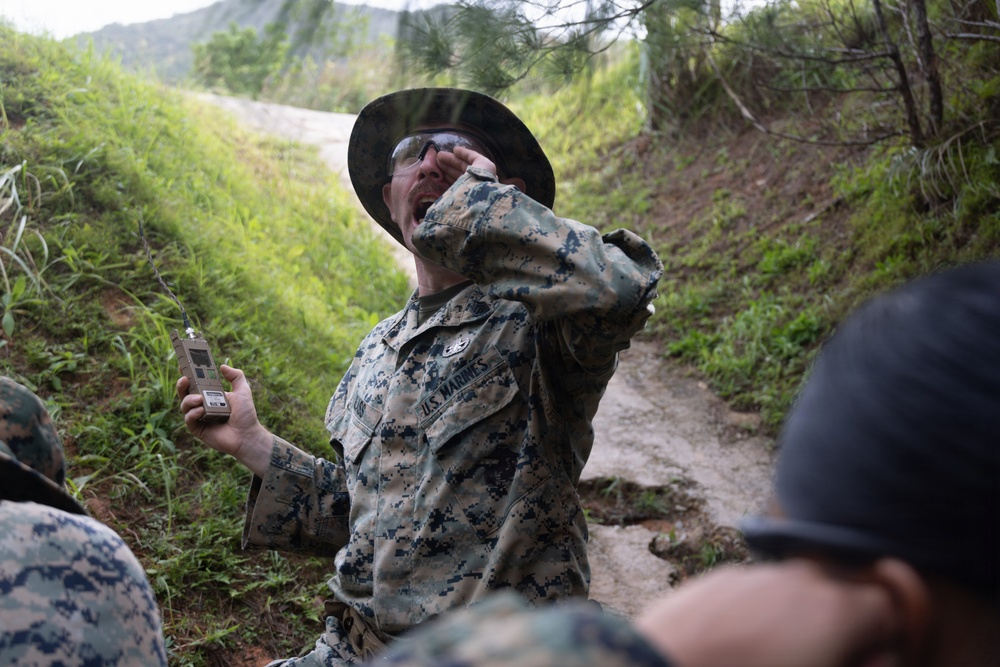

Marines and Japanese explosive-ordnance troops ran a live demolition range on Okinawa during Keen Sword 27
The Marine Corps said Marines with 3rd Explosive Ordnance Disposal Company, 9th Engineer Support Battalion, 3rd Marine Logistics Group, trained with Japan Ground Self-Defense Force members on a bilateral live-fire ground response range on Okinawa on Oct. 23. The range covered safety procedures, thermite grenades, M112 demolition blocks, detonating cord, water charges, and drones, then controlled detonations. Warrant Officer Logan Maar, an EOD diver officer with the company, said the first time the two forces figure out how to work together should not be a real-world crisis. Sgt. Daniel Arroyo, an EOD technician, said the point was for the partner force to see which tools the Marines use and how they employ them. The evolution was part of Keen Sword 27, the routine biennial field exercise with Japan.